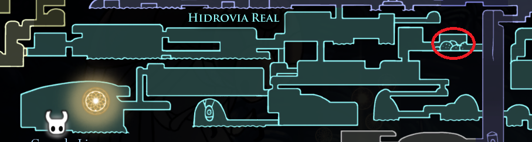

Amuleto único concedido pelo Rei de Hallownest ao mais leal cavaleiro. Gasto e sujo, mas bem cuidado. O portador irá emitir um odor heróico.

Insígnia Do Defensor
Depois de derrotar o Defensor do Esterco.
Logo quando derrotado você pegará o amuleto.
